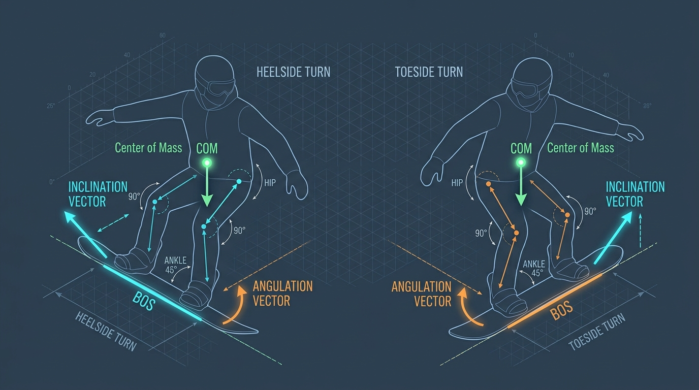
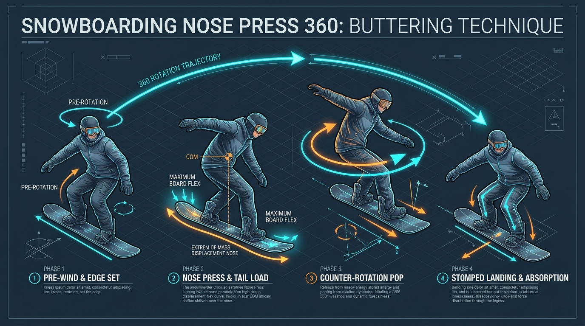
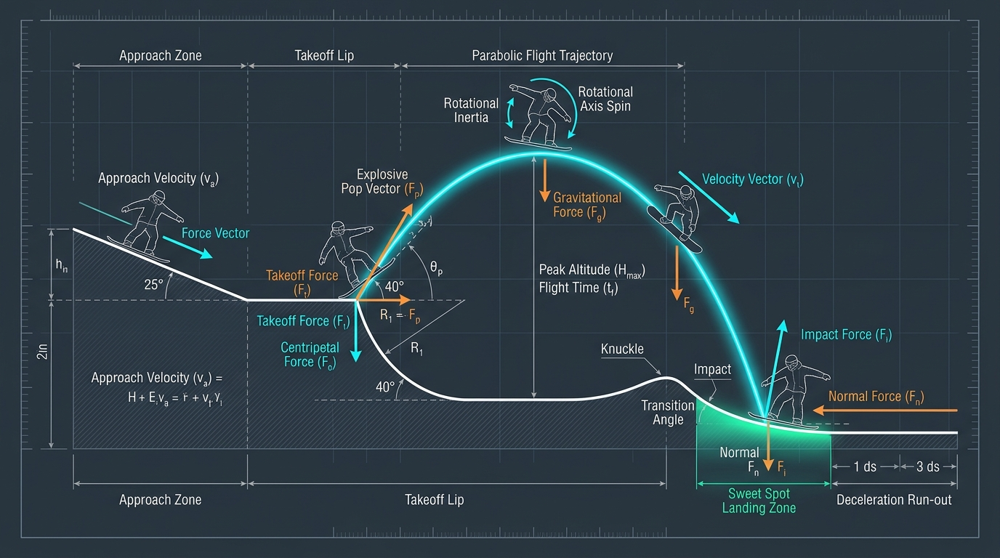
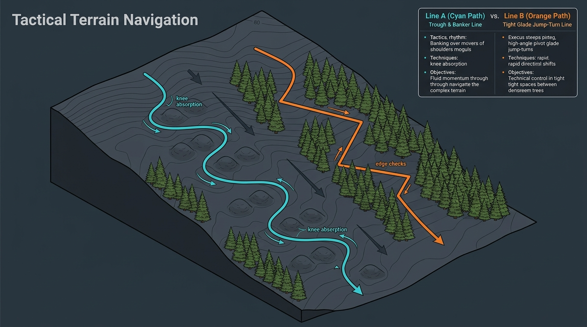
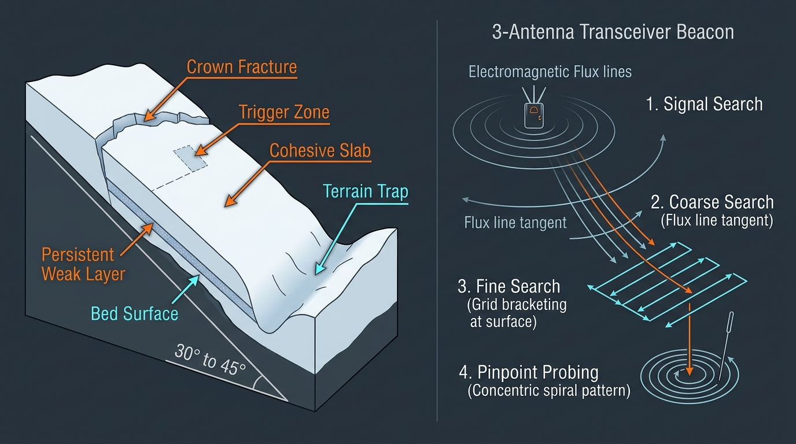

BIOMECHANICS 01
Heelside vs Toeside：COM/BOS、傾角與折角對稱力學圖
解析後刃（Heelside）與前刃（Toeside）在關節槓桿上的本質差異：前刃具備踝、膝、髖三個關節緩衝，而後刃受限於高背（Highback），必須依賴更精準的髖部折角（Hip Angulation）與坐骨向彎內投影，避免上半身過度前折導致抽離有效邊。
由 50 位來自全球各大認證體系考官、運動生物力學博士、日本 JSBA 技術選與平花選手、X-Games 公園教練、AIARE 雪崩救援專家及專業 UI/UX 團隊聯合編纂與三階段審核。從季前肌力、COM/BOS 物理核心、初中高階刻滑，到平花組合邏輯、Park 跳台拋物線、樹林蘑菇與野雪雪崩科學，打造最詳盡的數位互動教材。

不同國家的雪況、地形與文化孕育了截然不同的單板教學切入點。本教材由具備跨協會滿級認證（CASI Lv4、AASI Lv3、SBINZ Lv3/Trainer、JSBA A級/技術選、BASI ISTD）的教練團去蕪存菁，建立統一且互補的物理與教學語言。
單靠靜態文字無法掌握毫秒間的「換刃時機 (Edge Change Timing)」與「質心投影 (COM-BOS Vector)」。左側為 60fps 多視角技術動作分解影片模擬器（支援 0.25x 超慢動作、時間軸拖曳與即時教練字幕）；右側為 即時生物力學參數實驗室，可自由調整立刃角、前後配重、折角與滑行速度，觀察物理公式與卡刃風險變化。
拖動下方滑桿改變滑手姿態，即時計算有效刻滑半徑 \(R_{\text{eff}}\)、平衡傾角 \(\theta_{\text{eq}}\) 與逆刃 (Catching an Edge) 臨界值：
點擊左側章節切換完整課程內容。每一章節皆包含物理與生物力學核心原理（含公式與數據指標）、分級實戰訓練科目 (Drills)、精準重心與關節角度設定、常見錯誤力學診斷以及50人專家團隊思維心法。
平花（Ground Tricks / Buttering）絕非死記硬背招式名稱，而是由 8 大基礎原子技能 (Atomic Skills) 透過 4 大發力與動量銜接邏輯（儲能彈跳、反向預轉蓄力、刃對點轉換、雙軸重心鎖定） 組裝而成。點擊左側基礎原子技能可篩選包含該元素的進階招式，點擊右側招式卡片可檢視完整 Phase 1–Phase 4 重心百分比、用刃角度与失敗防卡刃解析。
由運動生物力學團隊與 AI 視覺工程師共同繪製的高清深色藍圖教材圖表，直觀呈現單板滑行時看不見的重力、離心力、合向量、支撐底面積 (BOS) 與三維空間軌跡。

解析後刃（Heelside）與前刃（Toeside）在關節槓桿上的本質差異：前刃具備踝、膝、髖三個關節緩衝，而後刃受限於高背（Highback），必須依賴更精準的髖部折角（Hip Angulation）與坐骨向彎內投影，避免上半身過度前折導致抽離有效邊。

清楚標示 Phase 1 預轉蓄力、Phase 2 質心（COM）精準移至前腳固定器外側使板頭產生最大彈性形變、Phase 3 上下半身反向釋放角動量完成 360 度旋轉、Phase 4 三關節同步屈曲吸收衝擊。

為什麼落在饅頭頂（Knuckle）會重傷膝蓋，而落在斜坡甜蜜點（Sweet Spot Transition）卻輕如鴻毛？圖解展示飛行終端速度向量 \(v_t\) 與斜坡切線夾角最小化時，正向衝擊力 \(F_n\) 大幅降低的物理機制。

對比兩種高階地形選線思維：Line A 利用雙膝如避震器般主動伸縮（Absorption & Extension）維持質心水平滑過蘑菇群；Line B 在高密度樹林中結合點剎（Edge Checks）與小半徑樞軸轉向（Pivot Turns）穿越樹木間隙。

左側剖析持續性弱層（Persistent Weak Layer）受滑手觸發產生皇冠斷裂（Crown Fracture）與地形陷阱（Terrain Trap）；右側詳解信號搜尋、粗略搜尋（沿電磁通量線弧形前進）、精細十字定位（<3m 貼雪面）與同心螺旋探針法。
當滑手速度 \(v\) 提升且有效刻滑半徑 \(R_{\text{eff}}\) 縮小時，強大的離心力 \(\vec{F}_c\) 與重力 \(\vec{g}\) 合成指向雪板支撐底面積（BOS）的合力向量，使滑手能在傾角超過 75° 時依然穩定鎖刃不滑脫。
本線上教材由 10 個專業領域小組（每組 5 位專家，共 50 人） 進行獨立技術審查、物理公式驗算、教學法校准與視覺體驗無障礙檢測。以下列出全體 50 位專家針對初稿所發現的潛在問題與最終修正方案，確保每一條原理與動作指導皆達到國際考官級精準度。
#070B14 / #0B1120）搭配冷光青（#38BDF8 代表速度與 COM 軌跡）及暖陽橘（#FB923C 代表壓力、BOS 與立刃角）；同時提供頂部一鍵切換「雪地強光高對比模式」，解決雪場陽光直射手機螢幕反光問題。
JetBrains Mono）標示角度與配重比，讓學員 5 秒內抓到核心指標。